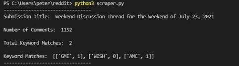
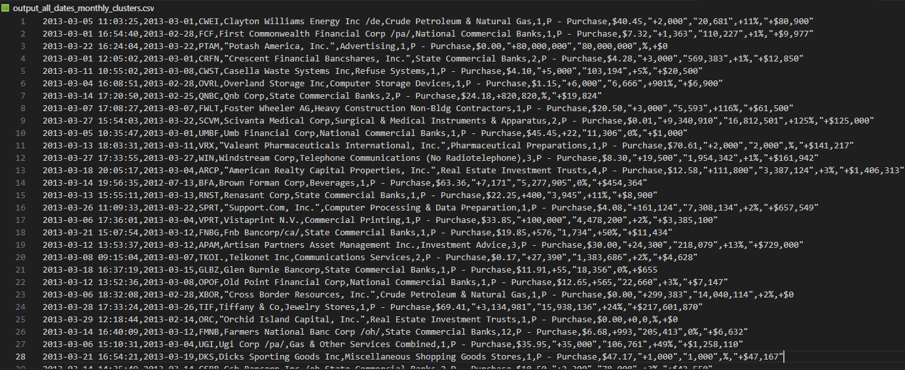
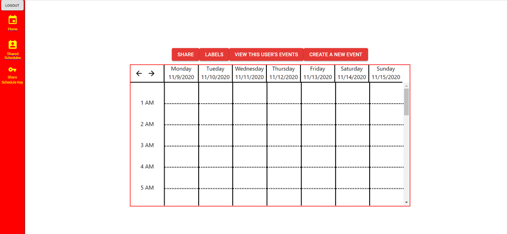
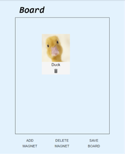
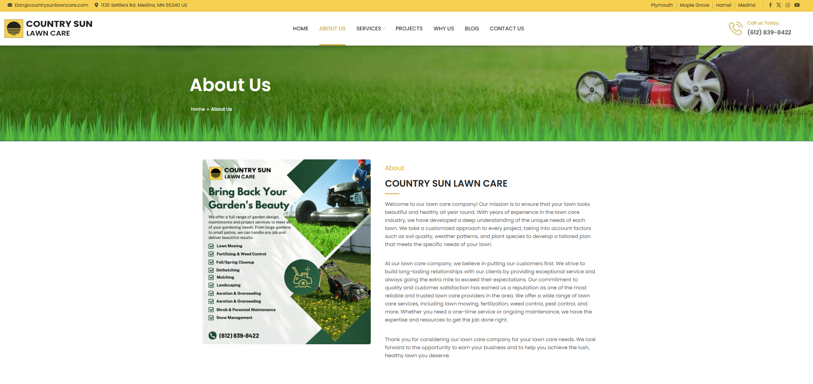
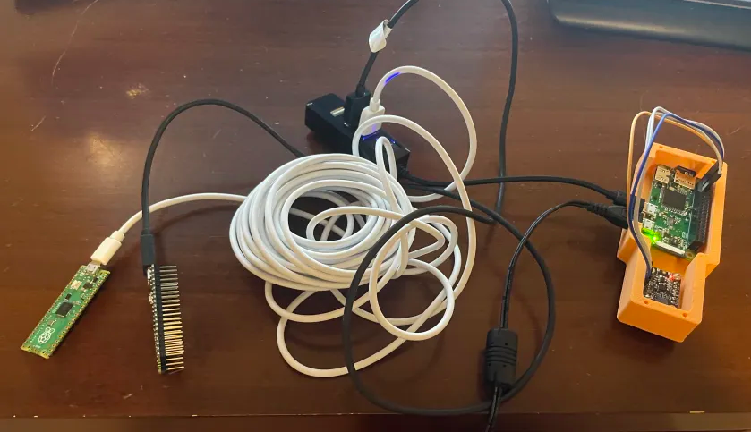
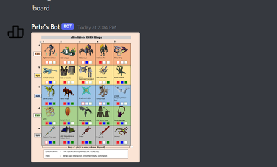
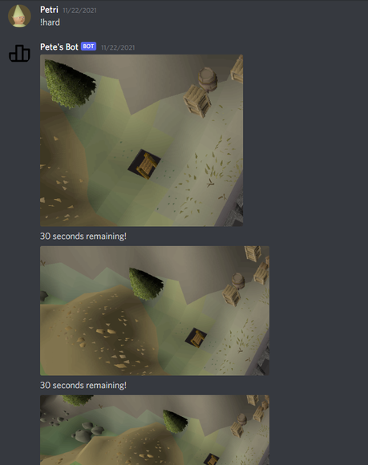

My projects encompass a range of domains, including data analysis and financial insights, full-stack web applications, interactive bots, and embedded systems for real-time monitoring.
If you'd like to view the source code for any specific project, please contact me at peter.rothstein3@gmail.com

This project explores the relationship between social media sentiment and stock market trends by analyzing discussions from Reddit’s WallStreetBets community. Using the Reddit API and Python, I scraped comment data from popular threads and filtered for specific stock ticker mentions. I then applied keyword frequency analysis and sentiment analysis to quantify the level of positive or negative “hype” surrounding each stock. Additionally, I tracked short-term (5-day) trends in sentiment to identify potential momentum patterns. This project strengthened my skills in data scraping, natural language processing, and exploratory financial analysis.

In this project, I analyzed insider trading activity by scraping publicly available data from OpenInsider. Using Python and raw HTML parsing, I extracted key metrics such as transaction value gains, company names, and individual traders. I then cross-referenced this data to evaluate which companies and insiders consistently generated significant returns, aiming to identify potentially reliable investment signals. This project enhanced my ability to work with unstructured web data, perform financial analysis, and draw insights from real-world datasets.

Developed as part of a team project at Iowa State University (COMS309), Cytinerary is a full-stack scheduling application tailored for student life. Built using React, Spring Boot, and MySQL, the app allows users to organize weekly schedules, including classes and campus events. This was my first full-stack project, where I contributed to both frontend and backend development, gaining experience in RESTful APIs, database design, and collaborative software engineering practices.

BitMagnet is a web application created in COMS319 that allows users to collaboratively create and share virtual boards containing text and images—similar to placing magnets on a digital refrigerator. The application includes user authentication, board selection and sharing features, and interactive board views. Built with React, Node.js, and MySQL, this project deepened my understanding of full-stack development, user interaction design, and real-time collaborative features.

I designed and developed a multi-page business website (countrysunlawncare.com) for my friends' lawn care company using Weebly along with custom HTML and CSS. The site includes sections for services, project showcases, company information, and contact details. This project introduced me to foundational web development concepts and emphasized the importance of clean UI/UX design, accessibility, and creating user-friendly navigation for small business clients.

As part of a multidisciplinary senior design team, I developed the software system for monitoring electrical metrics within an RV. The system collected AC/DC voltage, current, and power data from Raspberry Pi Picos, which I processed on a Raspberry Pi microcontroller. I then built a web-based interface using React and Node.js to display real-time data updates. This project provided hands-on experience with hardware-software integration, real-time data processing, and designing intuitive dashboards for live system monitoring.

This project involved creating an interactive Discord bot that generates and updates bingo cards for a video game. Using Python, Discord’s API, and the Pillow library, I implemented functionality that allows users to mark tiles via commands, automatically updating specific coordinates with color-coded squares. This project enhanced my understanding of bot development, event-driven programming, and programmatic image manipulation.

I developed a Discord-based guessing game bot where users identify in-game locations from progressively zoomed-out images. The bot manages timed rounds, accepts and evaluates user input, and dynamically reveals hints if no correct answer is given within the time limit. Built with Python and Discord’s bot framework, this project helped me learn how to handle asynchronous user input, manage timed events, and create engaging interactive experiences within a chat environment.